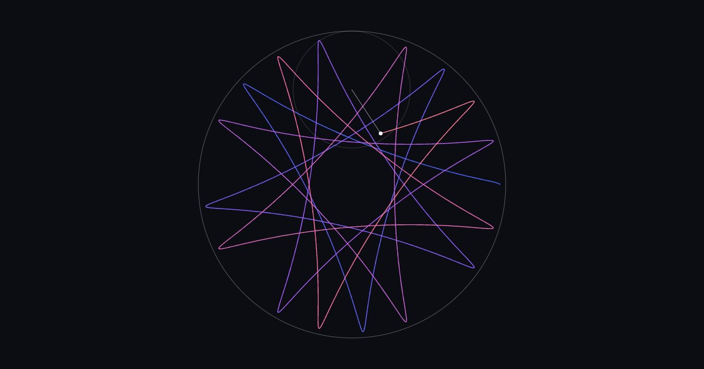

Math Explorer · Drawing Machines
Drawing Machines: epicycles, spirograph, harmonograph and Lissajous figures
Spinning circles, rolling gears and swinging pendulums that draw as you watch.

Start exploring Drawing Machines →
Joseph Fourier claimed that any wave is a sum of simple ones. Drawn in the plane, each one is a circle spinning on the end of the last, and enough of them can draw anything: a heart, the letter π, or a shape you draw yourself. Watch the circles join one by one and the drawing come into focus.
There are the classic machines too: the spirograph (a wheel rolling inside a ring), the harmonograph (pendulums tracing musical ratios), Lissajous figures, times tables on a circle that outline a cardioid, and roses. Thirty drawings in all, each one exact, and each can be printed as a raised tile.
Things to try
- Draw your own shape and watch the circles rebuild it
- Add the circles one by one to see a heart appear
- Slide the times-table multiplier and watch the threads tangle
- Compare the musical fifth and octave on the harmonograph
- Find out why spirograph sets have odd-looking tooth counts
Start exploring Drawing Machines →